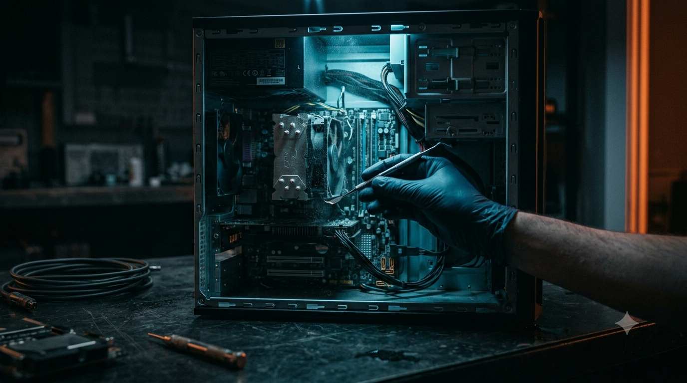

Two Things,
Done Right.
Linux migrations for hardware that still has life in it. Static websites small businesses actually own. Both delivered at a flat fee, scoped upfront, with no recurring charges.

Full service details.
Each service is flat-fee, scoped before any work starts, and built around something you keep — not something you rent.

Phoenix Conversion
Your Windows 10 machine didn't pass the Windows 11 hardware check — but that doesn't mean it's done. I wipe the old OS and install a hardened Linux distribution configured for everyday use. Sub-30-second boots, zero telemetry, no more update loops threatening to lock you out of your own computer.
Simple hardware upgrades — a faster hard drive, more RAM, a new network or video card — are available as add-ons. If the issue turns out to be something bigger (motherboard, power supply, serious physical damage), I'll say so upfront and point you to someone who specializes in it.
Drop-off available in North Fort Worth, Keller, Southlake, Roanoke, Haslet, Watauga, Grapevine & North Richland Hills.

Custom Website Design
A static HTML website built from scratch for your small business. No WordPress, no Squarespace, no page builder. Just clean files — HTML, CSS, images — served directly off a CDN. Loads fast, doesn't get hacked, and costs nothing to keep running after the build is paid for.
You get the files. You own the files. You can move them, back them up, or hand them to someone else — the website doesn't live inside a platform that can raise prices or sunset features on you.
Not sure what you need?
Describe what's wrong or what you're trying to build. I'll tell you whether it's something I can help with, give you a straight answer on cost, and point you elsewhere if I'm not the right fit.
Send a message →What does "static" actually mean?
No jargon — here's the real difference, and why it matters for a small business owner.
WordPress, Wix, Squarespace
Your site runs on a database, plugins, and a content management system. You pay monthly to keep it running. If the platform raises prices, gets hacked, or ends a feature you depend on — your site is affected, because you don't control the machinery underneath it.
Plain files, built once, owned outright
A static site is just files: HTML, images, text. Nothing to log into, nothing to update. No database to get hacked, no plugin to break, no monthly software bill. Faster load times because there's nothing dynamic happening in the background. You own every file. Move it, back it up, hand it to someone else.
Same process, every job.
No surprises. No scope creep. What's quoted is what's billed.
Free Consultation
Describe the problem or the build. You get a straight answer on what it involves and what it costs before anything starts.
Flat-Fee Quote
One price, agreed upfront. No hourly clock, no line-item surprises at pickup or delivery.
The Work
Hardware serviced or site delivered on the agreed timeline — North Tarrant County drop-off for conversions, remote for websites.
You Own It
No subscriptions, no recurring platform fees. What you paid for keeps working long after the invoice is closed.
Phoenix Conversion service area.
Hardware work has to happen hands-on, so Linux conversions are limited to North Tarrant County. Website builds are remote and available anywhere in the country.
Common questions.
How much does the Phoenix Conversion cost?
The Phoenix Conversion starts at $120 flat for DFW drop-off. That covers the full Windows-to-Linux migration, data preservation, and a hands-on orientation so you know what changed and how to use it. A hardware add-on (SSD or RAM installation labor) is available for +$45 — you provide the parts.
Do you service computers outside of Fort Worth?
Linux conversions are available for drop-off throughout North Fort Worth, Keller, Southlake, Roanoke, Haslet, Watauga, Grapevine, and North Richland Hills — hardware work has to be done hands-on, so it's limited to that area. Custom website projects are fully remote and available to clients anywhere in the country.
What's included in a custom website build?
Every build is hand-coded HTML and CSS — no WordPress, no page builders. It includes deployment on Cloudflare Pages, SEO metadata setup, mobile optimization, and a contact form. Pricing is flat-fee and scoped upfront. No hourly clock, no surprises at delivery.
Will Linux work for my everyday use?
For most people, yes. Linux has solid open-source equivalents for common software: LibreOffice for documents, Firefox for browsing, Thunderbird for email, GIMP for images. If your workflow depends on specific Windows-only software, we discuss that during the free consultation before any work starts — no surprises.
What does "flat-fee quote" actually mean?
The price is set before any work starts and does not change. No hourly clock, no line-item charges at pickup or delivery. If scope changes after we've agreed on a price, it gets discussed first — nothing is added without your approval.
Tell me what you're working with.
Drop me a message on the contact page. No hard sell, no commitment required — just a straight conversation about whether I'm the right fit.
Contact Us →